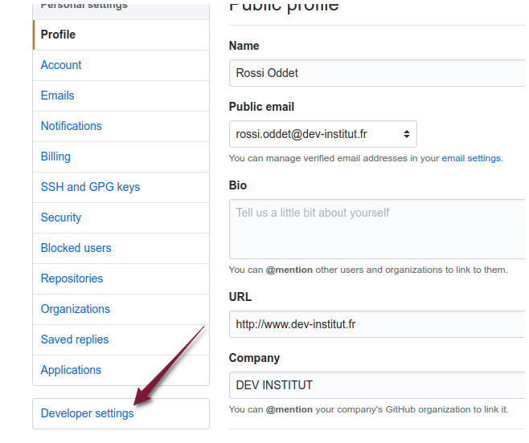

Top Collègues #1
L'objectif de ce TP est de réaliser une application qui permet de classer des collègues.
Initialisation du projet
- Créer une nouvelle application :
ng new top-collegues-front --skip-tests
Déploiement automatique de l'application sur la branche gh-pages
Créer un fork du dépôt
top-collegues-frontfourni.S'authentifier à l'aide de votre compte Github sur le site : https://travis-ci.org/.

- Se rendre sur votre profil (menu Profile)

Cliquer sur le bouton Sync account.
Effectuer une recherche du dépôt
top-collegues-frontet activer le dépôt.


- Cliquer sur le dépôt (dans l'exemple
roddet/top-collegues-front).

- Ajouter au code source du projet un fichier
.travis.yml:
language: node_js
node_js:
- "9"
before_script:
- npm install
script: npm run build
deploy:
local-dir: dist/top-collegues-front
provider: pages
skip-cleanup: true
github-token: $GITHUB_TOKEN # Set in travis-ci.org dashboard, marked secure
keep-history: true
on:
branch: master
notifications:
email: false
slack: diginamic:nIQwPkWk2zfq2fjtzxMWhuBD#travis-callofdta
- Mettre à jour le fichier
package.jsoncomme suit (adapter le nom de l'utilisateur):
"scripts": {
...
"build": "ng build --prod --base-href https://NOM_UTILISATEUR.github.io/top-collegues-front/",
Publier les modifications sur Github.
Une construction Travis se lance automatiquement.
La construction échouera. C'est normal, la variable d'environnement
GITHUB_TOKENn'est pas paramétrée dans Travis.Se rendre dans le paramétrage Github
- Se rendre dans la rubrique Developer settings.

- Se rendre dans la rubrique Personal access tokens.

- Cliquer sur Generate new token.

- Générer un token avec les droits sur vos dépôts publiques.
Copier le token généré. Nous allons à présent mettre à jour Travis.
Se rendre dans le paramétrage du job Travis (rubrique Settings)

- Ajouter la variable d'environnement
GITHUB_TOKEN.

- Relancer la construction.

Après la fin de la construction, vérifier que la branche
gh-pagesa bien été créée sur le dépôt Github.Vérifier l'application déployée : http://NOM_UTILISATEUR_GITHUB.github.io/top-collegues-front
Cliquer sur l'icône
build
- Copier le code en version Markdown.

- Mettre à jour le fichier
README.mdavec :- le code de l'icône
buildcopié - l'adresse du site en ligne.
- le code de l'icône
A ce stade à chaque fois que la branche master sera mise à jour, l'application sera déployée automatiquement par Travis.
(optionnel) Intégration Angular Bootstrap with Material Design
Pour réaliser les composants graphiques, nous allons utilisé Angular Bootstrap with Material Design.
- Installer MDB
npm install angular-bootstrap-md chart.js@2.5.0 font-awesome hammerjs rxjs-compat --save
- Compléter le fichier
.angular.jsonen ajoutant la propriétéstyleextavec la valeurscss.
{
...
"projects": {
"top-collegues-front": {
...
"schematics": {
"@schematics/angular:class": {
...
},
"@schematics/angular:component": {
...
"styleext": "scss"
},
Renommer
src/styles.cssenstyles.scss.Mettre à jour le module
src/app/app.module.tsen ajoutant le module :MDBBootstrapModule.
// ...
import { MDBBootstrapModule } from 'angular-bootstrap-md';
@NgModule({
// ...
imports: [
BrowserModule,
MDBBootstrapModule.forRoot()
]
//...
});
- Compléter le fichier
.angular.json
{
...
"projects": {
"top-collegues-front": {
...
"architect": {
"build": {
...
"options": {
...
"styles": [
"node_modules/font-awesome/scss/font-awesome.scss",
"node_modules/angular-bootstrap-md/scss/bootstrap/bootstrap.scss",
"node_modules/angular-bootstrap-md/scss/mdb-free.scss",
"src/styles.scss"
],
"scripts": [
"node_modules/chart.js/dist/Chart.js",
"node_modules/hammerjs/hammer.min.js"
]
},
...
},
...
}
},
"...
},
...
}
- Compléter le fichier
tsconfig.json
"include": ["node_modules/angular-bootstrap-md/**/*.ts", "src/**/*.ts"],
- Tester la modification en local
ng serve
- Publier vos modifications sur Github et vérifier que le site en ligne a pris en compte vos modifications.